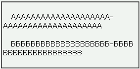

ブロックレベル要素以外ではword-breakプロパティの指定が無視される。
<p><span style="word-break:break-all;">AAA……</span></p> <p style="word-break:break-all;"><span>BBB……</span></p>
AAAAAAAAAAAAAAAAAAAA-AAAAAAAAAAAAAAAAAAAA
BBBBBBBBBBBBBBBBBBBB-BBBBBBBBBBBBBBBBBBBB
word-break:break-all; 指定（単語の切れ目であっても折り返しを行う）をインライン要素に指定した場合とブロック要素に指定した場合とを比較しています。「AAA……」や「BBB……」の途中で折り返されるかを確認してください。なお、通常はハイフンの直後で折り返されます。
WinIE6.0での表示（標準モード）
2001年5月17日のCSS3草案までは、word-breakプロパティはブロックレベル要素にのみ適用可能であると定めていました。現在のWinIEはこれに基づいた実装であると考えられます。一方、2002年5月23日のCSS3草案以降は、word-breakプロパティはすべての要素に適用可能であると定めています。ただし、まだ勧告に至っていないために今後この規定が変更される可能性があります。
WinIEにおけるword-breakプロパティの仕様の詳細は以下を参照してください。
WinIE6.0の標準モード、互換モードで不具合の発生を確認しました。